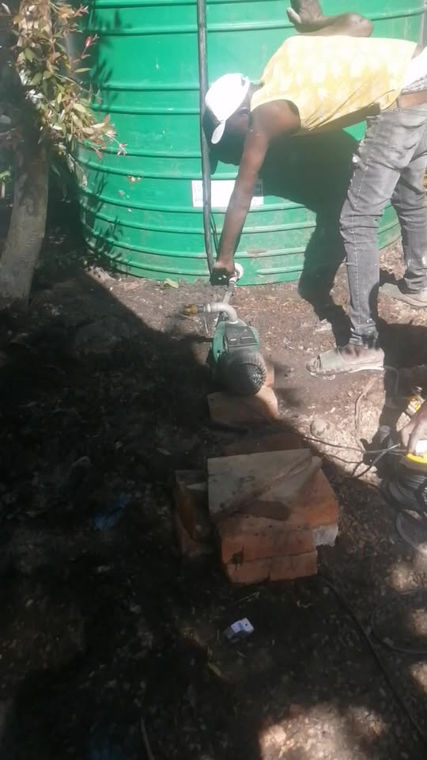

Pumps and tanks connected to your borehole or wellpoint, plus repairs when the water stops.
[Call-out / starting price: confirm with Richard]
A borehole or wellpoint needs the right pump to be useful. We connect pumps and tanks so the water goes where you need it: irrigation, a storage tank, or the house through filtration.
Pump stopped, losing pressure or pumping sand? Send us a WhatsApp with a photo and a short video of what it's doing, and we'll tell you the next step.
Often, yes. Send a short video of the pump running and a photo of the setup and we'll tell you what's likely wrong.
Yes. We check and repair existing boreholes, wellpoints and pumps.
Yes. We connect boreholes and wellpoints to storage tanks, and add filtration if the water is going into the house.
Send us a WhatsApp with a photo of your yard. We'll tell you if a borehole or wellpoint fits, and what it costs.